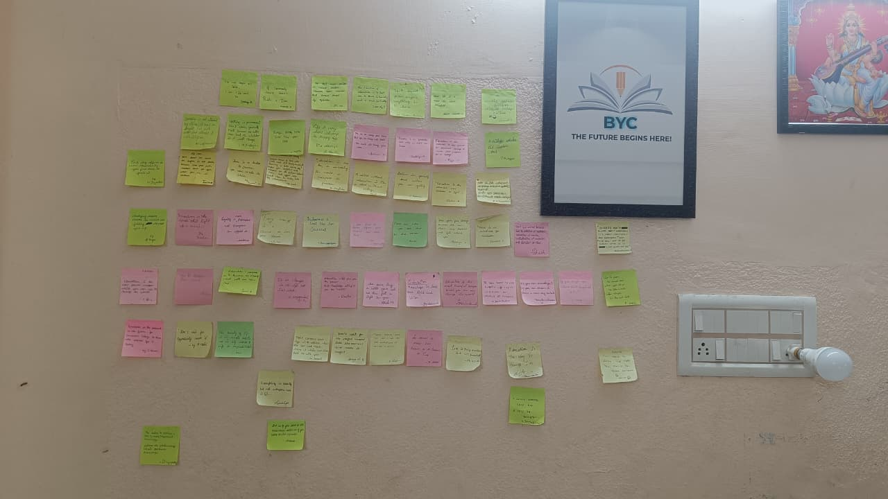
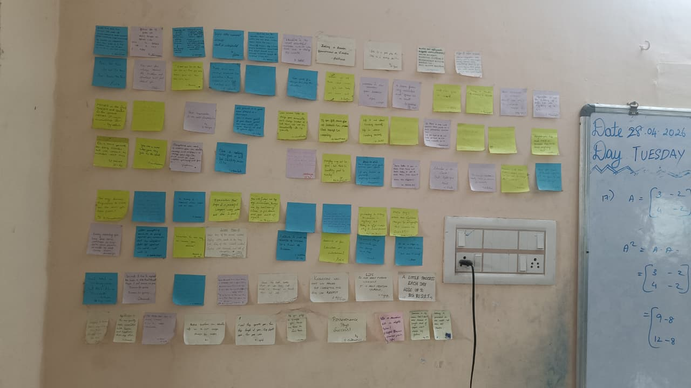

From record-breaking exam results to prestigious institutional awards, our community continues to push the boundaries of what's possible.
Most of our students improve their grades within the first 6 months. We help you learn, practice, and do better every day.
More than 1000 students have reached their goals and got placed in great universities. You can be next!
We are proud to be recognised for our hard work and student support. We will keep helping you succeed.
Real results from real students. See how personalised guidance transforms academic journeys.
"My tutors didn't just teach me formulas; they taught me how to think like a scientist. I went from a failing grade to an A* in just one year!"
"The creative writing workshops changed my perspective entirely. I found my voice as a writer and learned to express my ideas clearly and concisely."
"It was overwhelming until I joined the tuition sessions. The structured revision and practice papers made the impossible feel achievable."
Hear from the parents and students who make BYC Academy possible.


I have always been a good student, but when I joined BYC Academy, I started scoring higher marks. The tutors are patient and explain difficult concepts clearly. I especially like the one-on-one doubt-clearing sessions, which have boosted my confidence and improved my grades significantly.
BYC Academy has greatly improved my academic approach. The positive environment and supportive teachers made learning more engaging. The structured classes and individual attention helped build my confidence, and my grades have improved consistently. I feel more prepared for my exams now.
BYC Academy has truly helped me build a strong foundation in all subjects. The supportive instructors and well-structured classes have boosted my confidence and improved my grades consistently. I especially appreciate the individual attention I received, which addressed my specific learning needs and made me more enthusiastic about my studies. It’s been a wonderful journey!
BYC Academy has been a great support in my academic journey. The teachers are approachable and explain concepts clearly, which has helped me improve my understanding and confidence. The regular guidance and feedback have made a noticeable difference in my performance. I feel more prepared and motivated in my studies thanks to the academy.